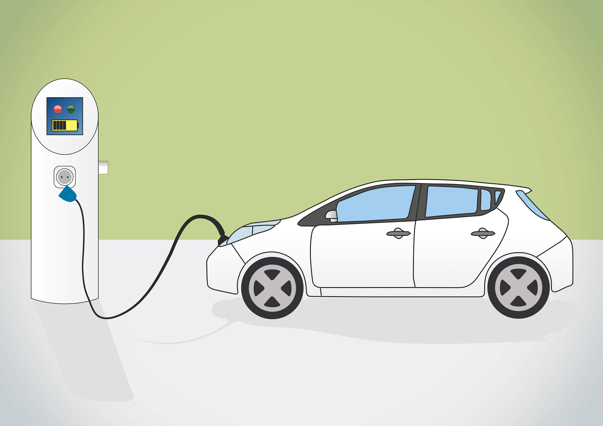
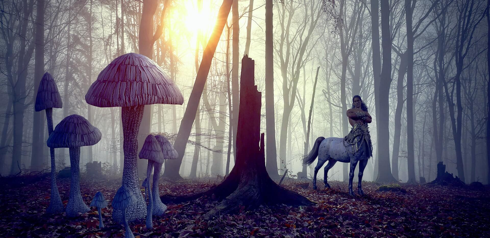
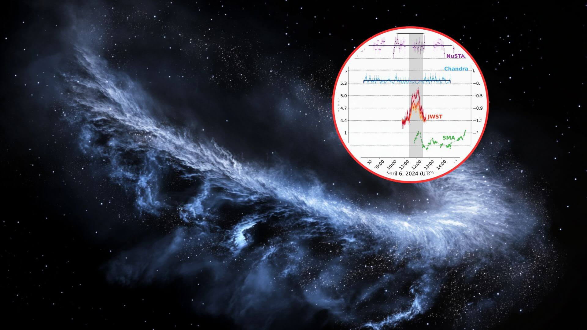
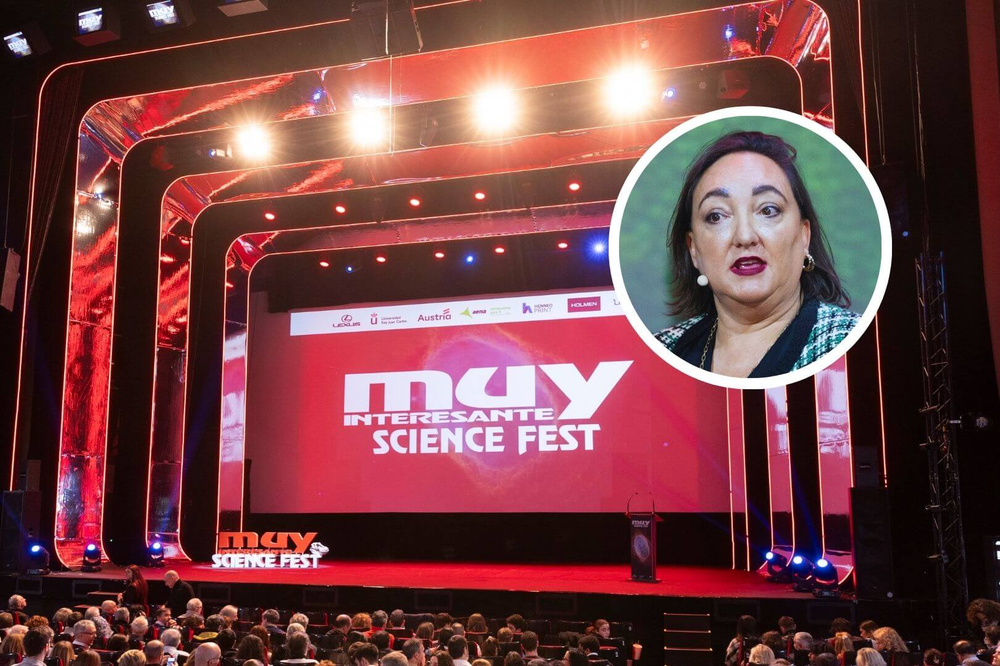

Historia
La Giralda es la torre campanario de la catedral de Santa María de la Sede de la ciudad de Sevilla, en
Andalucía (España). La parte inferior de la torre corresponde al alminar de la antigua mezquita de la
ciudad, de finales del siglo XII, levantado en época almohade, mientras que la parte superior es una
construcción sobrepuesta en el siglo XVI, en época cristiana, para albergar el cuerpo de campanas. En su
cúspide se halla una estatua de bronce que representa el Triunfo de la Fe y que tiene función de veleta, el
Giraldillo. Mide 94,69 m metros de altura.
El 29 de diciembre de 1928 la catedral, incluida la Giralda, fue declarada Monumento Nacional. En 1987 el
conjunto del Alcázar, el Archivo de Indias y la catedral, con su torre, fueron considerados Patrimonio de la
Humanidad.
Decoración única para los monoplazas de CUPRA en la nueva temporada de la Fórmula E
Este descubrimiento revolucionario causa sorpresa entre los astrónomos: el centro de las galaxias podría contener estrellas formadas por materia oscura

Revolución de autos: cómo ponerse las pilas con el coche eléctrico

Sumérgete en el mundo de los centauros, criaturas mitológicas mitad hombre mitad caballo

Hallazgo en el centro de la Vía Láctea: destellos de infrarrojo medio revelan nuevos secretos de Sagitario A*, el agujero negro supermasivo de nuestra galaxia
¿Cuál fue el papel de la URSS en la invasión de Polonia?
GoPro quiere liderar el mercado este nuevo año bajando el precio de la HERO13 a su mínimo histórico

Solemos ignorar que las plantas son seres vivos": La fascinante visión de Rosa Porcel que te hará replantearte el mundo natural